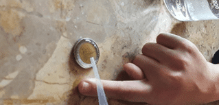

How Many Drops Can You Fit On A Coin?
In this experiment we will explore how many drops of water you can fit on the surface of a coin.
Materials:
- A coin
- A dropper
- A cup of water
Experiment:
- Fill a dropper with water.
- Slowly drop water on a coin. Hold very steady and use your finger to stabilize the dropper as shown in the picture above. Count the number of drops that fit without spilling over versus what you expected. Try this with different size coins.
My Guess:
50
Reality:
Can you fit more drops with other liquids? If you add soap to the water, do you expect more or less drops? What about hot versus cold water? What accounts for the difference?
